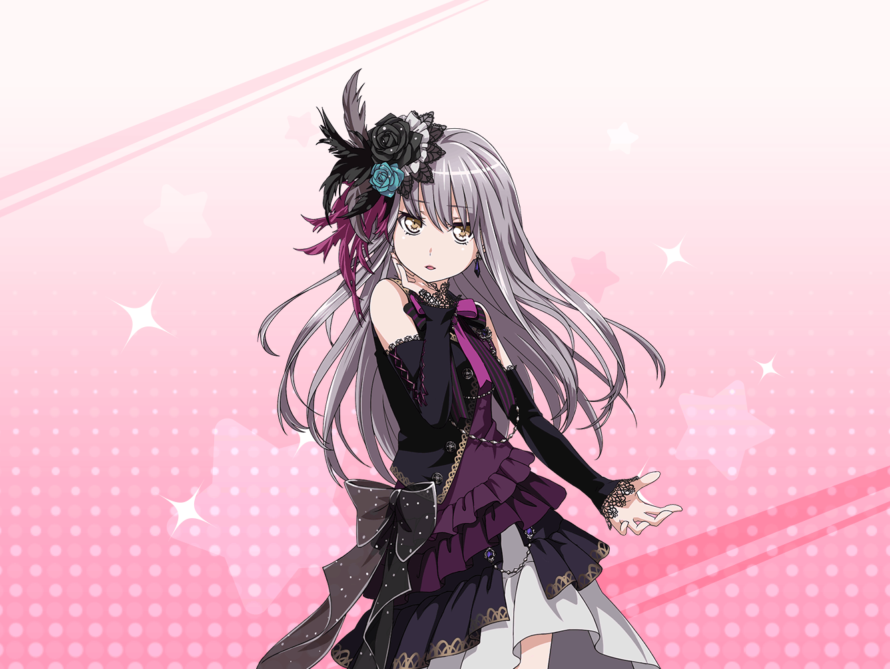

あこ
わぁ～～～！！！！
友希那さん超カッコイイ！！！！
まさに闇の支配者ーーーっ！！！！
友希那
闇……支配……？
友希那
燐子からは、この衣装のデザインは
私達のオリジナル曲をイメージしたって
聞いていたけど違うの？
あこ
えっ。あ～、そうそう！
暗黒の気高き闇騎士団っていうイメージでって
あこは伝えたんですけど
あこ
紗夜さんが偏りすぎてるって反対して、
なんかそういう感じになったみたいですっ
友希那
つまりどういうこと？
あこ
うーん？ だからこう、
ばーーーんってなって、どかーーん！ って
友希那
…………
友希那
（この子の言っていることって、
よくわからないことが多い。
どうしたら……）
あこ
デザイン画の時から友希那さんに
最高ハマるなって思ってたんで、感動です！
友希那
あ、ありがとう……
友希那
（喜んで、ほめてくれていることは
間違いなさそうね）
あこ
ふふふふ……
それにしても友希那さんとお揃いの衣装なんてっ
あこ
あこ、前々から友希那さんとは服の趣味が似てるなあって
思ってたんです！
こう、黒っぽい！ ゴシック！
友希那
？
確かに、私はモノトーンが好きだけど
あこ
でしょーーー！？
闇っぽくて、暗黒の世界の住人ぽくて、
悪魔とか死霊とか、超タンビですよねっ！！！！
友希那
……？
私は、色のついているものを、
極力身近に置きたくないだけよ
あこ
えっ。なんで？
友希那
いつでも音楽に集中したいから。
色のついたものがあると、気が散るの
あこ
色のついたものがあると気が散る……
あこ
カッコイイ！！
そのセリフ、あこも使っていいですか
友希那
え？ でも……
あこ
やっぱり友希那さんはさすがですっ！
そんなセリフ、あこ思いつかないよ！！
友希那
台詞じゃなくて事実で……
友希那
（それに、普段あこが私服で着ている、
あの目がチカチカする靴下とか、
正直苦手なのだけど……）
あこ
そうだ！
今度２人で双子コーデしましょうっ。
スタジオ練習のとき！
あこ
あこと友希那さんで大いなる闇の騎士団結成っ！
あこ
そうだりんりんも入れよう！
ゴシックって言ったらハロウィンコスとかも
したいですよね～！
あこ
わぁ～！
友希那さんめっちゃ似合いそうっ。
い、今からドキドキしてきたっ
友希那
私はやるなんて一言もいってないわよ
あこ
大丈夫です！ りんりんも含めて
あこ達好みが似てますから！
用意した服見てもらえばぜったい気に入りますっ！
友希那
…………いえ、その
友希那
（どうしてかしら……
何かすごく否定しなければいけない気持ちになる……）
あこ
あっ。
もしかして友希那さん双子コーデとか
初めてですか？
あこ
あこ達慣れてるんで、
なんでも聞いてくださいね！
友希那
え……と……
あこ
最近そういえば、新しく出来たブランドの
路面店がオープンしたんですよ！
あこ
絶対友希那さんも似合うから、
一緒に行きたいなぁ～～～！
あこ
りんりんと３人で！ アツイ！
カッコイイ！！！！
友希那
（……この話を止めるにはどうしたらいいの……？）